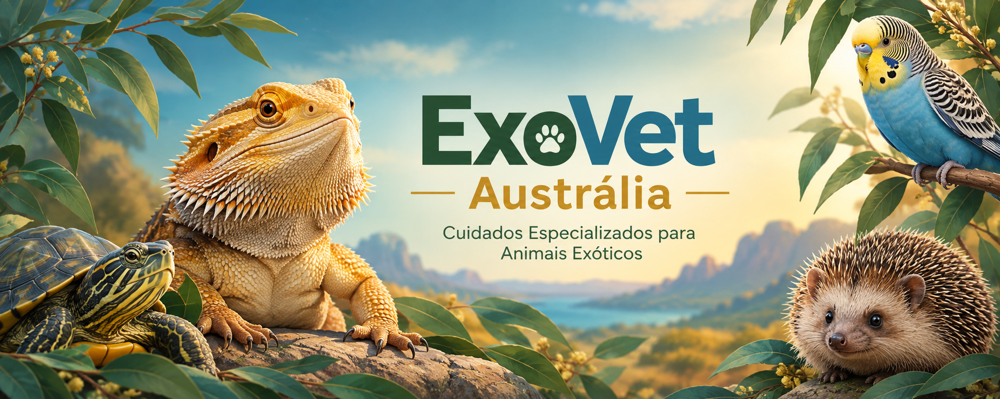

Entre em contato conosco!
Estamos à disposição para tirar suas dúvidas, agendar consultas e orientar você sobre os cuidados com seu animal exótico.

Estamos à disposição para tirar suas dúvidas, agendar consultas e orientar você sobre os cuidados com seu animal exótico.